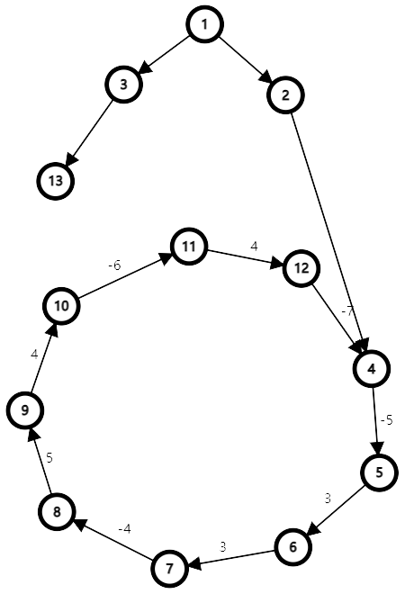
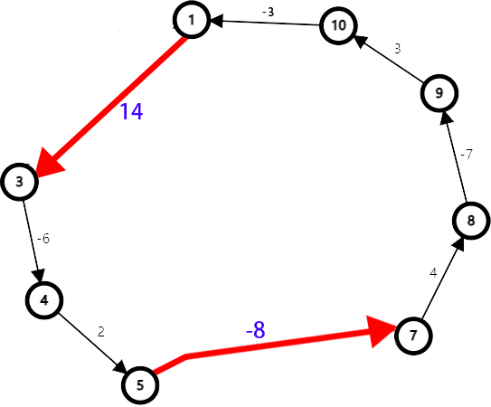
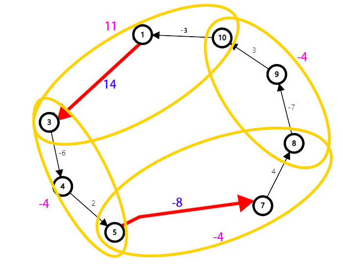
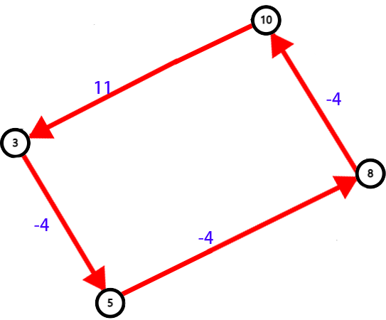
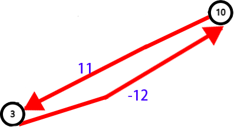

SPFA-DFS负环证明
SPFA-DFS负环证明
结论
让我们先来看结论：
如上图，明显可以看出 4 -> 5 -> 6 -> 7 -> 8 -> 9 -> 10 -> 11 -> 12 -> 4 构成了一个负环。
以任意节点为起点，用SPFA-DFS查找负环，则有：
若存在负环，则一定存在特定的至少一对终止点之间的不重叠顶点最短路径的边权从起点依次相加始终为负。
正解
我们只考虑在负环上的节点(因为我们只需证明这样的点对存在，非负权边节点情况过于复杂且并不影响答案的正确性，故忽略)。

我们对这个图重复进行如下操作：
- 对于连续的正(负)权边进行合并，并删去权值为0的边，得到一个正负权边交替相连的图。 
- 对于一个正负权边交替相连的图，将一条负边 $i$，$i$ 的起止两个节点和 $i$ 指向的正权边分为一组，求两个边权和并作为新边边权合并。新的边表示已 $i$ 的起点为遍历起点，经过两条边之后的边权和。和为负，则说明可以走过这两条边；和为正，则说明不可以以其作为起点。 
第3步
第4步
直到图中仅剩下两个节点和两条边，这时，一定有两边之和小于0。(因为两边之和即为环上边权之和)
因此，从这时负边的起点开始遍历原来的负环，保证边权依次相加为负。
对于任意一条负边，表示从起始节点到终止节点所包含的边依次相加为负，边权为从起点走到终点后的边权和。我们每次选择的均为负边起点。